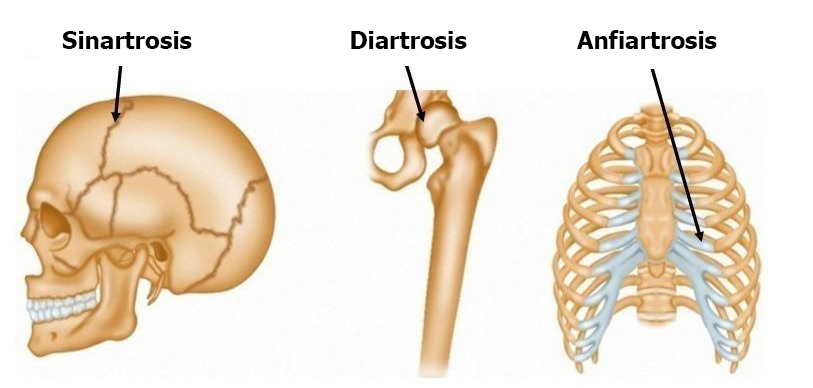

En el marco del sistema esquelético, las articulaciones juegan un papel esencial al permitir el movimiento y la flexibilidad del cuerpo humano. Las articulaciones pueden clasificarse en diferentes tipos según su estructura y grado de movilidad. Aquí se destacan tres categorías fundamentales: diartrosis, sinartrosis y anfiartrosis.
Diartrosis
Las articulaciones diartrosicas son las más móviles y flexibles del cuerpo. Están formadas por superficies articulares cubiertas de cartílago, rodeadas por una cápsula articular que contiene líquido sinovial. Este fluido lubricante facilita el movimiento suave de las articulaciones. Ejemplos comunes de diartrosis incluyen las articulaciones de la rodilla, cadera y hombro. La amplia movilidad de las diartrosis es fundamental para actividades cotidianas y deportivas.
Sinartrosis
Las articulaciones sinartrosicas son aquellas en las que los huesos están fuertemente unidos y apenas permiten movimiento. Estas articulaciones son estructuras sólidas que proporcionan estabilidad y resistencia. Un ejemplo claro de sinartrosis es la sutura craneal, donde los huesos del cráneo están fusionados sin permitir movimientos significativos.
Anfiartrosis
Las articulaciones anfiartrosicas presentan un grado intermedio de movilidad ofreciendo cierta flexibilidad sin llegar a ser tan móviles como las diartrosis. En estas articulaciones los huesos están conectados por cartílago permitiendo movimientos limitados. Un ejemplo de articulación anfiartrosis es la sínfisis púbica que conecta los huesos de la pelvis. Estas articulaciones son cruciales para la absorción de impactos y la resistencia a tensiones mecánicas.
